SOK-2014 . Fall 2023
Lecture note
[Supplementary reading materials includes GdR Chapter 9. In addition, also consult the “Veileder i samfunnsøkonomiske analyser” sections 3.4 and 3.6]
Uncertainty and risk
A crucial aspect of conducting a cost-benefit analysis entails addressing uncertainties. The decision to approve or reject a project depends on the future costs and benefits. However, the future is inherently uncertain and so a cost benefit analysis must take into consideration these uncertainties.
We will focus on the following commonly used methods.
Expected NPV
Sensitivity and scenario analyses
Simulation analysis
Quasi-option values
Expected NPV
Following this approach, we model the future outcome as a set of relevant contingencies - a range of possible outcomes that might and will occur.
For instance, our decision to build a dam depends on the availability of irrigation water, which, in turn, relies on future rainfall. Nevertheless, uncertainty exists, and we can describe the nature of this uncertainty by categorizing it into three potential states: high, moderate, and low rainfall in a year. The list is exhaustive (ruling out other possibilities) and mutually exclusive (not overlapping possibilities).
In the context of CBA, the set of contingencies ideally should encompass the entire spectrum of conceivable variations in the net benefits of the policy. However, the potential number of variations is limitless. To address this practically, we should consider incorporating contingencies that offer a diverse range of scenarios, sufficient to represent the possible outcomes effectively.
After we specify a tractable, representative set of outcomes, we should assign probabilities to these outcomes. The probabilities can be objective, for instance, historically observed frequencies, or subjective assessments. Notice that this approach, which models uncertainty as a list of potential outcomes with associated probabilities, effectively transforms it into a risk model.
To illustrate this, let’s assume, for the time being, that a project will yield returns for only one period. However, the outcomes (possible benefits and costs) during that period can be uncertain. The expected net benefit is calculated as the weighted sum of net benefits across all potential contingencies, with the weights determined by their associated probabilities.
\[ ENPV=\sum_{k=1}^{K}{p_k(B_k-C_k)}, \]
assuming there are \(K\) possible contingencies, \(p_k\ge 0\) denoting the probability of the \(k-\)th contingency, and \(\sum_{k}{p_k}=1.\)
This formulation can be easily extended to a multi-period setting.
For example, if an investment of \(I_0\) at time \(0\) in a project yields \(ENPV_t\) at time \(t=1,2,…,T\), then we can express the expected NPV of the project as
\[ ENPV=-I_0+\sum_{t=1}^{T}{\frac{ENPV_t}{(1+i)^t}}, \] where \(i\) denoting the discount rate.
In CBA, it is a common practice to treat expected values as if they were the precise values to be gained, even though the realized values seldom match these expected values. This approach is not conceptually accurate when assessing the Willingness to Pay (WTP) in situations where individuals confront uncertainty. Nonetheless, in practical terms, considering them as comparable is reasonable when either risk is spread across a set of policies or when risk is spread across a group of individuals affected by a policy. This practice tends to bring the actual realized values of costs and benefits closer to their expected values.
The above formulation for extending ENPV in a multi period setting works well as long as the probabilities assigned to various contingencies in a specific period are independent of the actions taken in previous periods. For instance, future rainfall is less likely to be influenced by whether a dam was constructed in the previous year. However, in certain situations, this assumption can be questionable. Take, for example, the decision to launch a vaccination project, which depends on the social costs to infection and the potential spread of infection in the future. In this context, whether the vaccination project has already started or not significantly influences the distribution of infection spread.
Decision trees and ENPV
Decision analysis can be thought of as an extended-form game. It has two stages.
Specification of decision tree. First, we specify the logical structure of the decision problem in terms of sequences of decisions and realizations of contingencies using a diagram (called a decision tree) that links an initial decision to final outcomes.
Backward induction. Second, we work backwards from final outcomes to the initial decision, calculating ENPV across contingencies and pruning dominated branches (ones with lower ENPV).
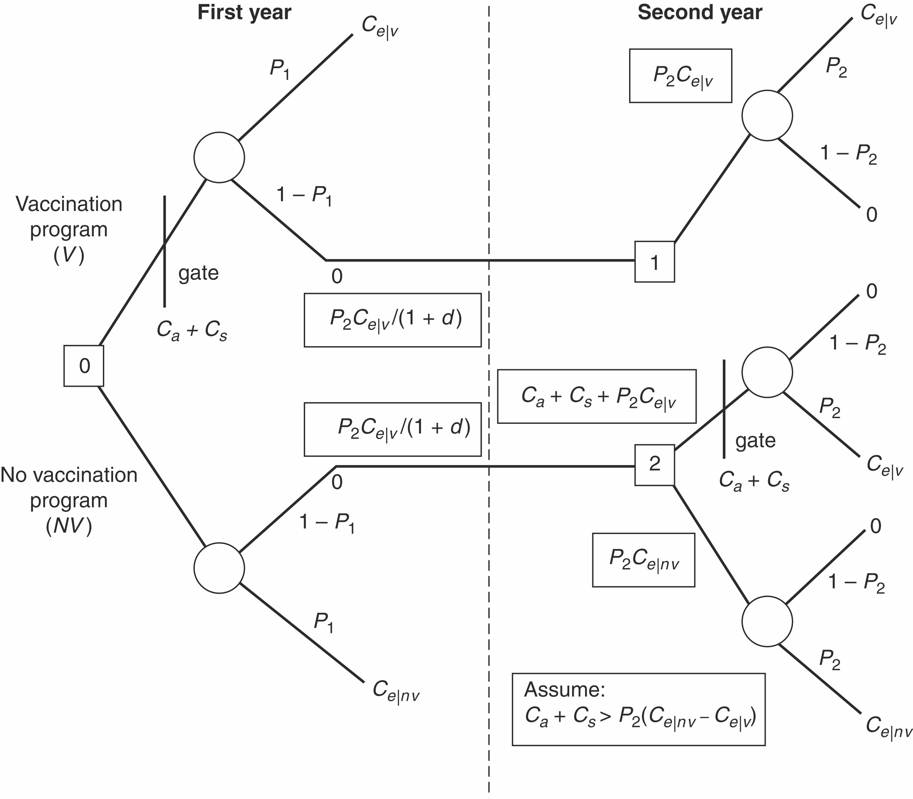
Consider the vaccination example in Suppl 4; see Figure 1 (note the typo in the figure - in the NV-arm at the \(0\)-node, conditional on the event of “no epidemic”, the return is \(\frac{P_2 C_e|_{nv}}{1+d}.\)
Three types of costs:
\(C_a:\) costs of administering the vaccination project
\(C_s:\) costs associated with the side-effects of vaccination
\(C_e|_v \space, C_e|_{nv} :\) costs of epidemic with vaccination and with no vaccination, respectively.
\(P_t\) is the probability an epidemic breaking out in period \(t=1,2\).
At decision node \(1\), the expected cost is \(P_2 C_e|_v\).
At decision node \(2\), the expected cost of initiating the vaccination project is \(C_a+C_s+P_2 C_e|_v\), and the expected cost of not initiating is \(P_2 C_e|_{nv}.\)
It is assumed in this context that \(C_a+C_s>P_2(C_e|_{nv}-C_e|_{v}),\) which gives us that initiating vaccination at node \(2\) is a dominated action, and so we can conclude that the rational action to take at node \(2\) is not initiating the vaccination project and the associated expected cost is \(P_2 C_e|_{nv}.\)
Finally, coming back to node \(0\), we can calculate the expected cost (EC) of the vaccination program as \(EC(V)=C_a+C_s+P_1 C_e|_v + (1-P_1)\frac{P_2 C_e|_v}{1+d},\)
and the expected cost of no vaccination program as
\(EC(NV)=P_1 C_e|_{nv} + (1-P_1)\frac{P_2 C_e|_{nv}}{1+d}.\)
As an illustration, suppose that we have data suggesting the following values for parameters:
\(P_1 =0.4,\) \(P_2 =0.2,\) \(d =0.05;\)
\(C_{e|v} =0.5C_{e|nv}\) - the vaccination program cuts the costs of influenza by half),
\(C_a =0.1C_{e|nv}\) - the vaccination costs 10 percent of the costs of the influenza), and
\(C_s =0.01C_{e|nv}\) - the side-effect costs are 1 percent of the costs of the influenza).
For these values,
\(EC(V) =.367C_{e|nv},\) and
\(EC(NV) = 0.514C_{e|nv}.\)
We can determine the ENPV of the vaccination program as the expected benefits (which is the costs it can avoid by implementing the project now, i.e., \(EC(NV)\)) minus the expected cost \(EC(V)\), which gives us
\(ENPV=0.147C_{e|nv}>0.\)
Sensitivity analysis
There are several key ideas to sensitivity analysis:
We face uncertainty about the predicted impacts and the values assigned to them.
Most plausible estimates comprise the base case.
The purpose of sensitivity analysis is to show how sensitive predicted net benefits are to changes in assumptions. (If the sign of net benefits doesn’t change after considering the range of assumptions, then the analysis is robust and we can have greater confidence in it.)
Looking at all combinations of assumptions is infeasible.
Partial sensitivity analysis
Consider how net benefits change as one assumption varies, holding other assumptions constant. It should be used for the most important or uncertain assumptions.
The value of a parameter where net benefits switch sign is called the breakeven value.
A thorough investigation of sensitivity ideally considers the impact of changes in each of the important assumptions.
For the purpose of illustration, we will consider a more detailed specification of the costs relevant to the decision analysis of the hypothetical vaccination program; See Figure 2 and Figure 3, which specify various parameters used in the analysis and the formulae to computing the cost components.
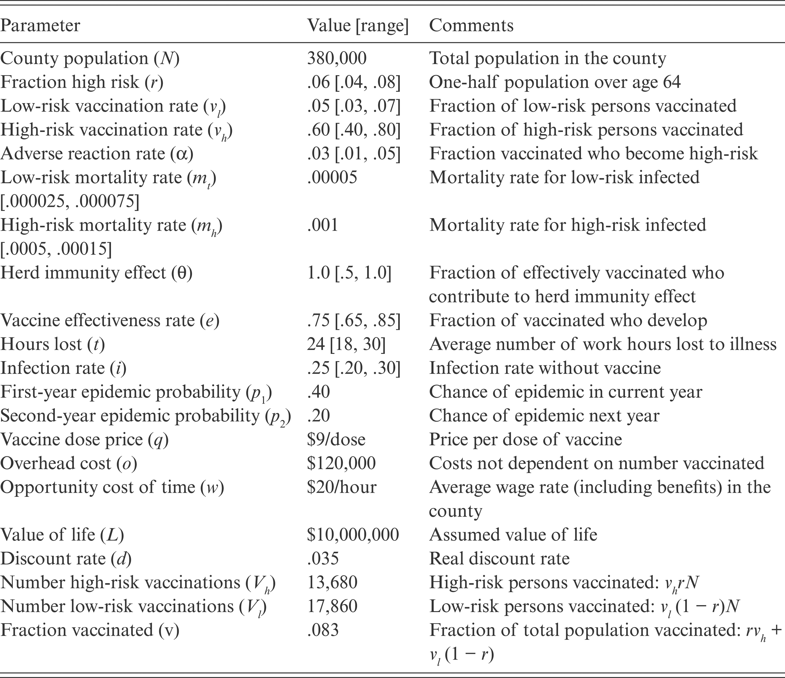

Note the typos in the formula for \(EC_{nv}\) - specifically, \(C_{e|v}\) must be replaced by \(C_{e|nv}.\)
import matplotlib.pyplot as plt
import numpy as np
# Define the ENB function
def ENB(p1, p2, d, Vh, Vl, q, o, alpha, w, t, mh, L, r, i, ml, n, theta, v, e):
ca = o + ((Vh + Vl) * q)
cs = alpha * (Vh + Vl) * ((w * t) + (mh * L))
cenv = i * ((r * n * ((w * t) + (mh * L))) + ((1 - r) * n * ((w * t) + (ml * L))))
cev = (i - (theta * v * e)) * ((((r * n) - (e * Vh)) * ((w * t) + (mh * L))) + ((((1 - r) * n) - (e * Vl)) * ((w * t) + (ml * L))))
ecv = ca + cs + (p1 * cev) + ((1 - p1) * p2 * (cev / (1 + d)))
ecnv = (p1 * cenv) + ((1 - p1) * p2 * (cenv / (1 + d)))
return ecnv - ecv
# Define parameter values for Scenario 1 and Scenario 2
S1 = {
'n': 380000,
'r': 0.06,
'vl': 0.05,
'vh': 0.6,
'alpha': 0.03,
'ml': 0.00005,
'mh': 0.001,
'theta': 1,
'e': 0.75,
't': 24,
'i': 0.25,
'p2': 0.2,
'q': 9,
'o': 120000,
'w': 20,
'L': 10000000,
'd': 0.035,
'Vh': 13680,
'Vl': 17860,
'v': 0.083
}
S2 = {
'n': 380000,
'r': 0.06,
'vl': 0.05,
'vh': 0.6,
'alpha': 0.03,
'ml': 0.00005,
'mh': 0.001,
'theta': 1,
'e': 0.75,
't': 24,
'i': 0.25,
'p2': 0.2,
'q': 9,
'o': 120000,
'w': 20,
'L': 5000000,
'd': 0.035,
'Vh': 13680,
'Vl': 17860,
'v': 0.083
}
S3 = {
'n': 380000,
'r': 0.06,
'vl': 0.05,
'vh': 0.6,
'alpha': 0.03,
'ml': 0.00005,
'mh': 0.001,
'theta': 0.5,
'e': 0.75,
't': 24,
'i': 0.25,
'p2': 0.2,
'q': 9,
'o': 120000,
'w': 20,
'L': 10000000,
'd': 0.035,
'Vh': 13680,
'Vl': 17860,
'v': 0.083
}
# Define the range of p1 values
p1_values = np.linspace(0, 0.5, 100)
# Calculate ENB values for Scenario 1 and Scenario 2
enb_values_S1 = [ENB(p1, S1['p2'], S1['d'], S1['Vh'], S1['Vl'], S1['q'], S1['o'], S1['alpha'], S1['w'], S1['t'], S1['mh'], S1['L'], S1['r'], S1['i'], S1['ml'], S1['n'], S1['theta'], S1['v'], S1['e']) for p1 in p1_values]
enb_values_S2 = [ENB(p1, S2['p2'], S2['d'], S2['Vh'], S2['Vl'], S2['q'], S2['o'], S2['alpha'], S2['w'], S2['t'], S2['mh'], S2['L'], S2['r'], S2['i'], S2['ml'], S2['n'], S2['theta'], S2['v'], S2['e']) for p1 in p1_values]
enb_values_S3 = [ENB(p1, S3['p2'], S3['d'], S3['Vh'], S3['Vl'], S3['q'], S3['o'], S3['alpha'], S3['w'], S3['t'], S3['mh'], S3['L'], S3['r'], S3['i'], S3['ml'], S3['n'], S3['theta'], S3['v'], S3['e']) for p1 in p1_values]
# Create the plot for two different values of life
plt.figure(figsize=(10, 6))
plt.plot(p1_values, enb_values_S1, label='L = 10 million')
plt.plot(p1_values, enb_values_S2, label='L = 5 million')
plt.xlabel('Probability of Disease in First Year (p1)')
plt.ylabel('Net Benefits')
plt.title('Net Benefits vs. Probability of Disease (p1)')
plt.legend()
plt.grid(True)
plt.ylim(-10000000, 30000000)
plt.xlim(0, 0.5)
plt.show()
# Create the plot for two levels of immunity
plt.figure(figsize=(10, 6))
plt.plot(p1_values, enb_values_S1, label='Full Herd Immunity')
plt.plot(p1_values, enb_values_S3, label='Half Herd Immunity')
plt.xlabel('Probability of Disease in First Year (p1)')
plt.ylabel('Net Benefits')
plt.title('Net Benefits vs. Probability of Disease (p1)')
plt.legend()
plt.grid(True)
plt.ylim(-10000000, 30000000)
plt.xlim(0, 0.5)
plt.show()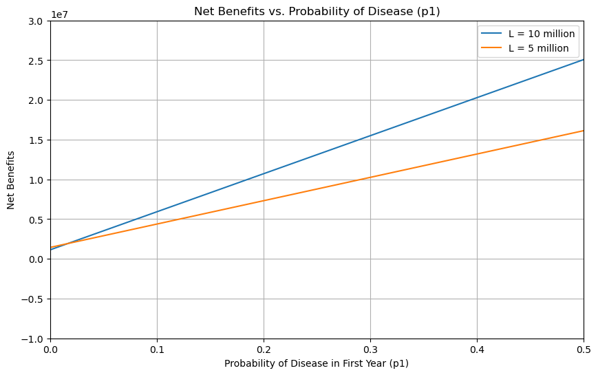
Note that these figures were generated using the same parameter specification suggested in the example included in Suppl 4. However, the plots turn out to be qualitatively similar but not identical to the ones reported in Suppl 4 (Figures 11.3 and 11.4). Check the code and formulas carefully.
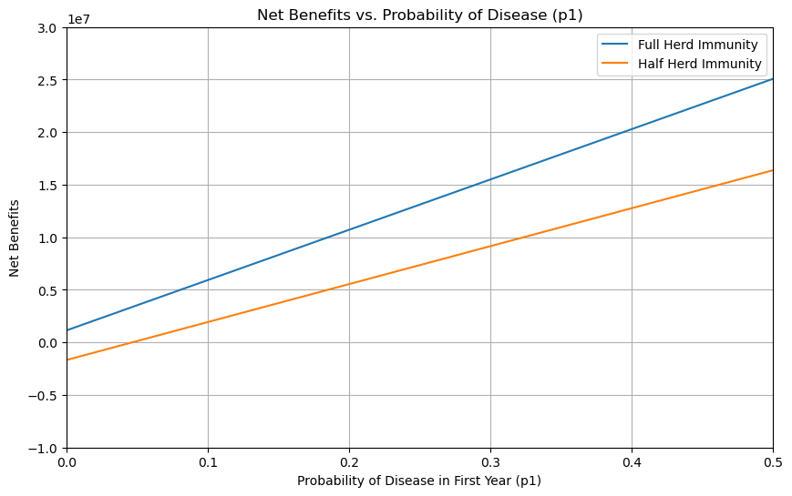
Best-case and worst-case scenario
We can compare the base case with the best and the worst cases possible.
Base Case: Assign the most plausible numerical values to unknown parameters to produce an estimate of net benefits that is thought to be most representative.
Worst Case: Assign the least favorable of the plausible range of values to the parameters.
Best Case: Assign the most favorable of the plausible range of values to the parameters.
Worst case analysis is useful as a check against optimistic forecasts and for decision-makers who are risk averse.
Simulation analysis
Partial and best/worst case sensitivity analyses have two limitations.
First, they may not take into account all the available information about the assumed values of parameters (i.e., the worst and best cases are highly unlikely).
Second, these techniques do not directly provide information about the variance of the statistical distribution of realized net benefits (i.e., one would feel more confident about an expected value with a smaller variance because it has a higher probability of producing net benefits near the expected value).
The essence of a simulation analysis is to elicit a distribution of outcomes. The basic steps are as follows.
Specify the probability distributions for all the important uncertain quantitative assumptions. If no theoretical or empirical evidence suggests a particular distribution, you can use a uniform distribution if all values are equally likely, or a normal distribution if a value near the expected value is more plausible.
Execute a trial by taking a random draw from the distribution for each parameter to arrive at a specific value for computing realized net benefits.
Repeat the trial many times. The average of the trials provides an estimate of the expected value of net benefits. An approximation of the probability distribution of net benefits can be obtained by creating a histogram. (As the number of trials approaches infinity, the frequency will converge to the true underlying probability.)
Figure \(6\) presents a histogram comprising 10,000 replications of random draws based on the bracketed assumptions listed in Figure \(2\). The assumed distributions are all uniform, with the exception of hours lost \(t\), which follows a normal distribution.
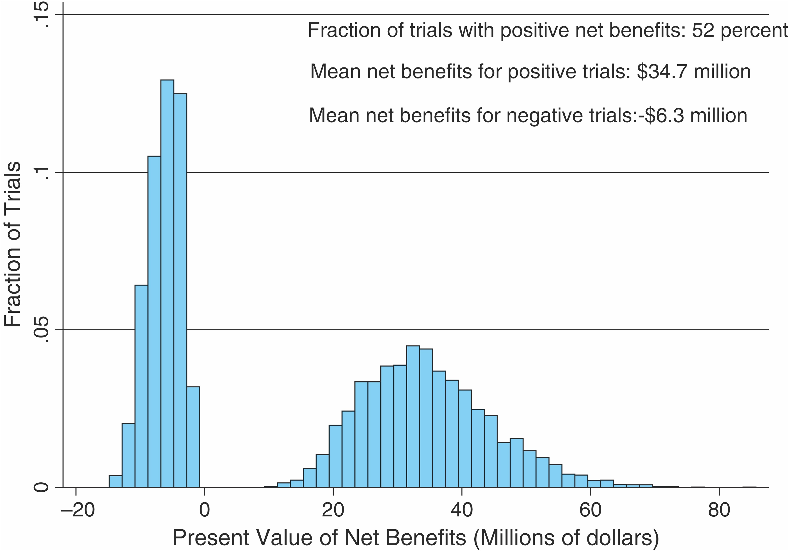
Note that the simulation analysis may involve calculation of the expected values of complex expressions (for example, ratios of variables) which will make the analysis quite complicated.
If the calculation of net benefits involves sums of random variables, then it is easy - expectation of the sum is the sum of the expected values of each variables.
If the calculation of net benefits involves products of random variables, using the product of expected values as the expected value of the product works only if the random variables are uncorrelated.
In the simulation analysis, correlations can be taken into account by drawing parameter values from either multivariate or conditional distributions rather than from independent univariate distributions.
If the calculation involves ratios of random variables, then even independence does not guarantee that the ratio of the expected values would be the same as the expected value of the ratio.
Information and quasi-option
Value of information
We often encounter decision problems involving the allocation of resources, such as time (for example, delaying a project), money and effort (for example, use of a larger sample size), aimed at reducing uncertainty in the values of parameters used to calculate net benefits.
In such cases, the investment of resources are meant to release valuable information that could reduce uncertainty, and the investment can be justified if newly available information turns out to be sufficiently valuable.
How can we measure the value of information? One way to do it is to find how much an information would increase the expected net present value of the project.
Quasi-option value
Quasi-option value is the expected value of information gained by delaying an irreversible decision.
Consider for example, a project with investment expenditure of NOK \(18\) million and that there is basically an equal probability that the operating profit in period 1 and all future periods will be either NOK \(500000\) or NOK \(1500000.\) Also assume that by postponing the investment to the next period, the decision maker will know with certainty whether the operating profit will be NOK \(500000\) or NOK \(1500000\) in each period. The calculation interest is set equal to 4 percent.
In this case, the decision maker is faced with two possible options.
Alternative 1: The project is implemented immediately with probability \(1,\) but with an uncertain operating profit. The expected net present value of alternative \(1\) is \(7000000.\)
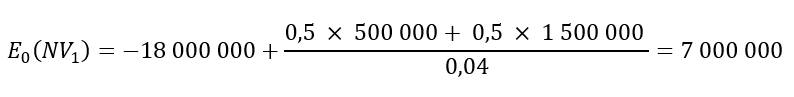
Alternative 2: The project is postponed by one year and only happens if the annual operating profit is 1,500,000. The probability that the project will be started is therefore 0.5. The expected net present value of alternative \(2\) is \(9375000.\)
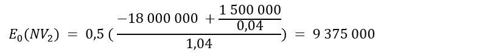
If an investment leads to irreversible effects, a positive net present value is no longer a sufficient criterion to determine whether the measure should be implemented immediately. Starting immediately will only be correct if the present value is sufficiently large to also cover the lost quasi-option value by postponing the measure.
For example, even if the expected present value of alternative \(1\) seems to appear as \(7000000\), it does not take into account the opportunity cost in the form of lost option value.
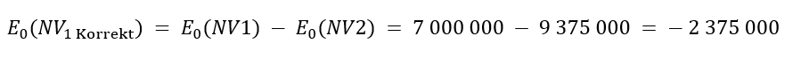
It is therefore not profitable to implement the project immediately.
When there are more than one feasible actions in every period, we can use simple decision trees to analyze these problems. A decision is also helpful in analyzing situation where the possibility of learning might depend on actions taken in previous periods. The above example, in contrast, illustrates a case of exogenous learning, in which the possibility of learning does not depend on actions taken previously.
Exogenous learning: Learning is revealed regardless of the chosen option. After the first period, we discover with certainty which of the two contingencies will occur. Quasi-option value is the difference in expected net benefits between the learning and no-learning case.
We can illustrate this case with the following example. The society is considering a development program which can adversely impact the surrounding wild habitat. There are two levels of development: Full (FD) and Limited (LD); and it is also possible not to pursue (ND) the development program.
It is uncertain whether the development program will ultimately be benefiting or costly. If the program turns out to benefit, then the benefit under FD is higher than that under LD. If the program turns out to be costly, then the cost under FD is higher than that under LD. Specifically, \(B_F>B_L>0\) and \(C_F>C_L>0.\) Assume ND results in zero returns.
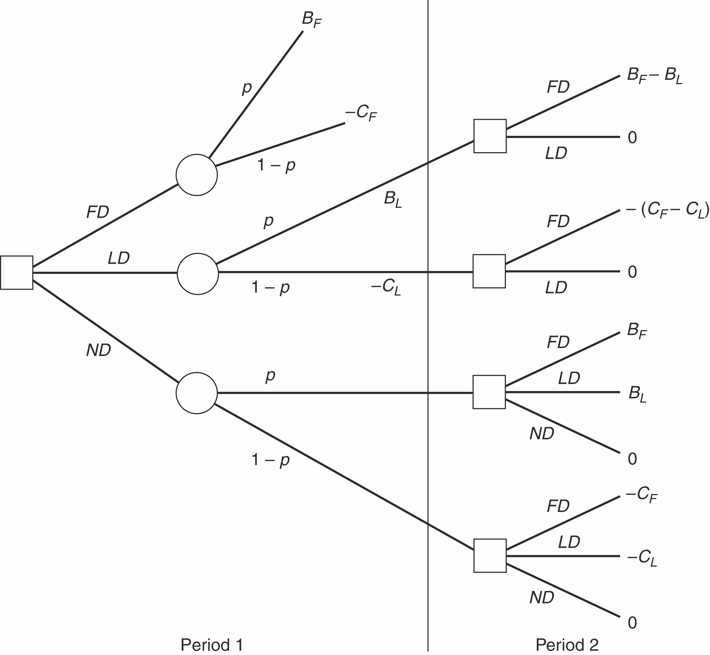
Assume FD is an irreversible option in the sense that if it is taken, then the effects can never be adjusted at a later stage. If LD (or ND) is followed, then at a later stage, say at period \(2\), it can be adjusted to FD (or FD or LD). Between the two periods, there will be learning about the project’s effect and the uncertainty will be perfectly mitigated. We assume exogenous learning in the sense it does not depend on what specific action is taken in period 1.
Doing backward induction, we can determine the quasi-option values, as reported in Figure 8.
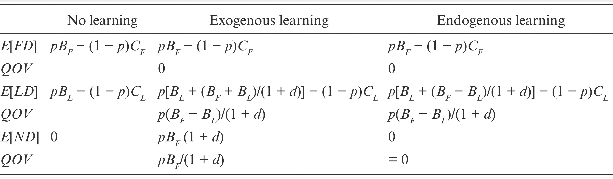
Endogenous learning: Information is generated only through the activity itself (whatever the program is). This leads to Exogenous learning yielding large no-activity results (i.e., a decision to hold off) and endogenous learning yielding large limited-activity results (i.e., a decision to pursue a limited program).
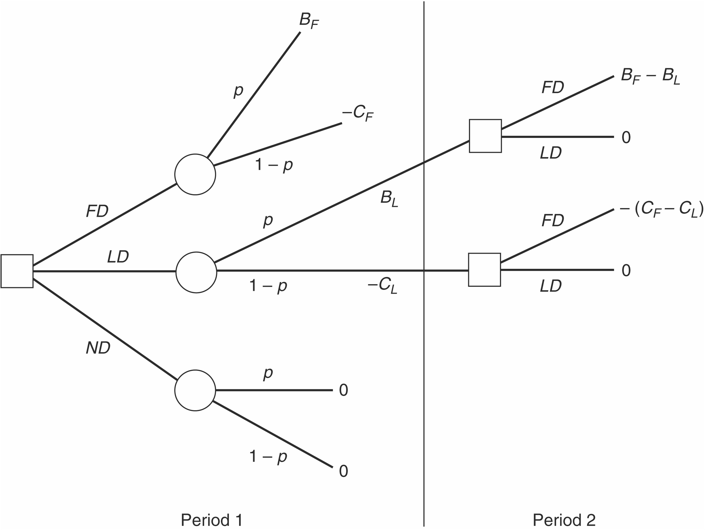
The expected values and the quasi-option values under endogenous learning are reported in Figure \(8.\)
Figure \(9\) reports a numerical illustration of the expected values for a specific set of parameter values:
\((B_F=100, B_L=50, p=0.5, C_F=80, C_L=40, d=0.8)\)
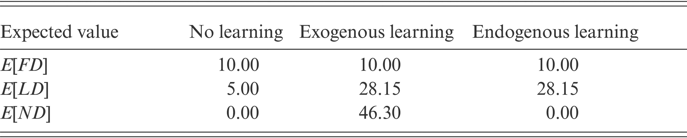
In this case, the optimal choice of development plan is sensitive whether learning is exogenous or endogenous or if there is no scope of learning. If there is no learning, then FD has the largest expected net benefits. If there is a possibility of exogenous learning, then ND has the largest expected net benefits. If there is a possibility of endogenous learning, LD has the largest expected net benefits.